How to Use Basic MarvinSketch Functions
Table of Contents
A new, blank molecule is created when you first launch MarvinSketch. You
can immediately begin working with this molecule. A MarvinSketch window can
hold only one molecule at a time, so all work you do within the
canvas is considered part of the same molecule. You can create a new,
blank molecule at any time during your session by choosing
File > New > Clear Desk from the menu bar. This
will clear the desk and discard any unsaved changes to the molecule you were
previously working with (but you can get it back using the Undo option).
The application allows you to work with
multiple molecules in multiple windows by choosing File
> New > New Window.
You can open existing molecule files
(from supported file formats) by
choosing File > Open on the menu bar.
It will load the content of the molecule file into Marvin and discard any
unsaved changes.
Tick the Show preview checkbox to see the contents of the file (molecules,
reactions, queries). A single item is displayed in the preview window,
the text field at the bottom shows the index of the current structure
and the number of structures in the file. When a multiple structure file is selected
(e.g. sdf), the navigation buttons become active. Their functions are: go to first,
go to previous, go to next, go to last. Note, that this is not the selection which structure
to open, it allows you only to check whether this is the file you would like to open.
You can also Paste existing structures from other windows to
the open molecule, as well as Drag&Drop a molecule file into the Marvin
window. Both actions will add the new structure to the currently open
molecule without overwriting the content of the canvas.
Pasting pictures with the help of OSRA is also possible (since version 5.3.0), please consult this page for details.
You can save the molecule to any of the supported
file formats.
This will allow you to open and work with this molecule later. The
default behavior of the Save
button is to save the molecule to the same file it was opened from,
in the same format. If you want to change the file name or format,
choose Save As.
If you are working with a new molecule, Save
will function the same as Save As.
If there are more than one molecule on the canvas and you choose option Save As
(or Save in case of new molecules),
Saving multiple fragments... dialog box will appear, offering three options:
- Save as one file containing all molecules as one.
- Save as one file containing multiple molecules separately.
- Save molecules as separate files (if filename_idx.format exists this option will overwrite it):
the numbering of the molecules begins in the upper left corner.
If the selected file format is not able to handle multiple fragments, only the first and third options are offered.
Applying Save As in case of an already existing file with multiple molecules and selecting the second option
leads to the Overwrite dialog box with 5 options:
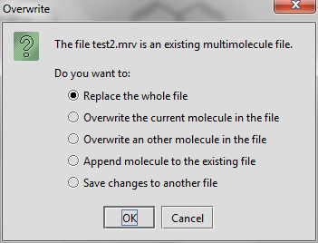
If no changes have been made to the file, the second and third options of the above list do not appear.
The Save As Image choice
in the File menu allows you to save an image of the
molecule in the sketcher. Marvin supports the following image
formats: JPEG, PNG, PPM, POVRay, and SVG. Please note that the saved image
cannot be edited in Marvin.
You can print an image of the current molecule by choosing
File > Print. If you print from a single page
document, if the size of your molecule(s) is bigger then the paper size, it will
be shrunken to one page.
If you want to print your molecule(s) to multiple
pages, you have to change the document type to Multipage Document in
File > Document Settings..., and arrange the
structures on the pages.
Multipage molecular documents help to work with large drawings by dividing them into pages.
You can create a multipage molecular document by choosing
File > Document Settings..., then checking in the
Multipage document checkbox.

You can set the number of horizontal and vertical pages in the
Document Grid part, and you can also define the title,
the page size and the margins in the corresponding sections of this dialog window.
After pushing the OK button, the following controls become automatically available:
- The items in the View > Pages menu are enabled
- A navigation status bar appears on the bottom of the window
- The frame of the pages appear on the canvas, while the title, the margins and
the page numbers are displayed on each page
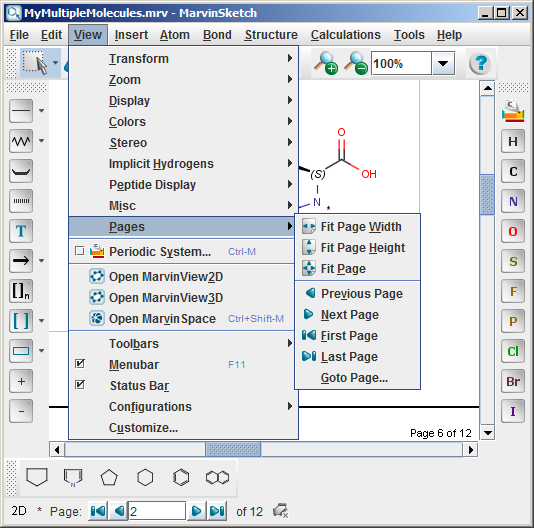
The navigation status bar and the items in the View > Pages menu are
available only if the Multipage document checkbox is set.
The status bar contains information about
the current page number in a text field and the number of all pages on a label.
It also contains a collection of buttons to
aid your quick navigation in the document. You can go the first, previous, next, and last page
using them. Alternatively, you can go directly to a specific page
by entering a number in the current page field and pressing enter.
All the navigation possibilities: go to first, previous, next, last, specific
pages are available from the View > Pages menu as
well. In addition, some automatic page zooming functions are also available in this menu, such as:
- View > Pages > Fit page height adjusts the
height of the current page to the height of the canvas.
- View > Pages > Fit page width adjusts the
width of the current page to the width of the canvas.
- View > Pages > Fit page adjusts the height
and/or the width of the current page to see the whole page, and places it
centralized within the canvas.
You can create structures using atoms, bonds, and templates.
- Select an atom from the Atoms Toolbar,
the Periodic Table dialog window, or by
shortcut.
- Move the mouse into the molecule
canvas. You will see the symbol of the selected item at the tip of
your cursor. It can be placed in the molecule by left-clicking on
the desired location.
- Marvin is chemically intelligent.
It will account for implicit hydrogens and set the charge according
to valence rules.
In case of metals, the following rules apply: metallic elements from the 1st
and 14-16th groups are added hydrogens, other appear as simple elements as default.
- You can replace any atom in the molecule by placing a new
atom on top of it.
- Select a bond type using the
Bond toolbar button or by
shortcut.
- To link two existing atoms, click
on one then drag the cursor to the other.
- Marvin will allow you to draw a
bond between any two atoms in the molecule. Valence errors
will be highlighted (if that option is enabled).
- To draw a bond from a single atom,
simply click the atom. A carbon atom will be added at the other end
of the bond.
- If you add a bond to empty canvas
space, a carbon atom will be added to each end of the bond.
- You can replace any bond in the
molecule by placing a new bond type on top of it.
- Bond types can also be changed using the
Bond pop-up menu. Single
bonds can be changed to Double or Triple by
left-clicking on them.
- Bold Tool, , is intended to be used for graphical presentations of molecules. Activate the tool, click on a bond and it will be changed to bold. In case of single, double, or aromatic bond the tool keeps the type of the bond during multiple clicking. In case of aromatic bond, Bold Tool has four positions: bold single, bold aromatic up, reversed bold aromatic up, and single. Note: your mouse must point to the same position of the bond. In case of other bond types (e.g., triple, wedges) multiple clicking has a different result; it does not retain the original bond type, but undoing the action does. Bold Tool is located in the Bond Menu, Tools toolbar, and bond PopUp menu by default.
Example
- You can make the selected bond hashed: Choose the icon from the "Tools" toolbar or the Bond >Hashed menu. It only retains single original bond type.
You can draw carbon chains easily selecting the Insert > Chain menu or clicking on the "Draw Chain" ( ) icon of the "Tools" toolbar. For curved chains click on the icon. The direction of the chain growth follows the mouse path. The number of carbon atoms can be increased or decreased by dragging the mouse. The chain drawing direction is mirrored based on the direction of the mouse movements.
) icon of the "Tools" toolbar. For curved chains click on the icon. The direction of the chain growth follows the mouse path. The number of carbon atoms can be increased or decreased by dragging the mouse. The chain drawing direction is mirrored based on the direction of the mouse movements.
MarvinSketch provides several predefined chemical structures,
called templates or structure templates (e.g., cyclopentane, cyclohexane, benzene).
They are categorized to template groups like Amino Acids, Polycyclics, etc.
The following template groups are available in MarvinSketch by default:
- Generic
- Rings
- Amino Acids
- Aromatics
- Bicyclics
- Bridged Polycyclics
- Crown Ethers
- Cycloalkanes
- Heterocycles
- Polycyclics
- Homology Groups
- Alpha D sugars
- Beta D sugars
- Deoxynucleosides
- Flavonoids
- Nucleobases
- Nucleosides
- Protoalkaloids
- True Alkaloids
- Vitamins
- My Templates
The templates can be accessed via the Advanced Templates Toolbar
or through the Insert > Template Library menu.
Steps of drawing with templates:
- Select a template using the
Template Library or the Advanced Templates Toolbar area.
- In case the template structure contains any S-groups, the group(s)
can be optionally expanded or contracted by pressing the Shift button.
- Place the template structure by left-clicking on the
desired location.
The Template Library Manager dialog contains
buttons that customize template handling.
In some cases, you will find it difficult to add new fragments to your molecule file, for example
if you already have structures cleaned in 3D. To add a new fragment to the canvas, follow these steps:
- Choose the New substituent from the Insert menu.
- Draw the structure in the new canvas. If you would like to transfer and match it to your original
3D molecule, do a 3D clean on the new fragment (Structure/Clean 3D).
- Click the Transfer button in the top left corner to return to the original canvas and place the new fragment.
Atom sprouting:
- Click an atom symbol on the toolbar or periodic system.
- Place the cursor over the atom where you would like to add the atom.
- Press the Shift key on the keyboard then click the atom. The new atom will
be attached to that atom.
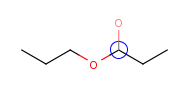
Template sprouting: you can add the template connected
by a bond formed between the selected non-primary atom and the attachment point of the
template. This way adding a substituent will only replace a hydrogen
atom on the selected atom, not the atom itself. This feature is limited to
the use of symmetrical templates where attaching the template has only
one possibility (e.g. as for phenyl).
- Select a template from the toolbar or the template library
- Move the cursor to the canvas and hover over an atom, a
grey colored image will show you the position of the template.
- Click the atom
to place the template.
To change the connection type (no sprouting):
- Select a template from the toolbar or the template library.
- Move the cursor to the canvas and hover over an atom.
- Press the Shift key and while holding it down, click the atom.
In both cases, you can change
the bond angle by rotating the template: holding down the left mouse button,
move the mouse to rotate the molecule, and release it when desired position is reached.
| Adding a cyclohexane template to a secondary carbon atom: |
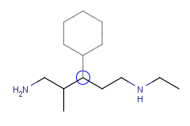 |
| Adding a cyclohexane template to a secondary carbon atom while holding down the Shift key: |
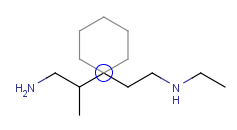 |
Notes:
- Abbreviated groups will be extended when holding down the Shift key, its attachment
is not affected in terms of sprouting.
- The grey outlined template will not be shown if the creation of a new bond would
lead to the valence error of the atom but will be added if you click the atom.
If you would like to form a new structure by combining two already drawn molecules, you have the possibility
to merge them in few steps. This starts with defining the merging points in both the template and the substituent
molecules (1, 2 or 3 pairs of them). The template molecule' coordinates are not changed, only the substituent
is resized, rotated (in three dimensions) and moved to fit the template.
- Select Assign Atoms from the Structure menu, Directed Merge submenu.
- Click and drag the arrow from the atom of the substituent to the template molecule. The arrow will be numbered.
- Repeat the assigning (the Assign Atoms action is still active, no need to re-select the command) once ore twice to
define more merging points.
- Merge the molecules by selecting the Merge command from the Structure menu, Directed Merge submenu.
- In case of assigning 1 or 2 atom pairs, the subsituent is selected after the merge and the Rotate in 3D
mode is active, and you can rotate the substituent around an axis:
1 atompair
- In case of one bond, this bond is the axis;
- In case two bonds, the axis is the bisector of the angle of these bonds;
- In case of 3 bonds have to choose the x,y, or z axis, or define the axis by selecting two atoms.
2 atompairs
- The rotation axis is defined by the two connection points of the template and the substituent. Now the user can rotate the substituent, and if any atom pairs fall in the merging range after the 3D rotation, they will be merged.
After the 3D rotation, any atom pair that falls in the merging range are merged. If this second merge happens only on one atom pair, the substituent remains selected, and is subject to a second 3D rotation action, where the rotation axis is defined by the original and the new connection points. Now rotate the substituent around this new axis, and again, if any atom pairs fall in the merging range after the 3D rotation, they will be merged.
Note: pressing the Shift key on your keyboard offers an alternative rotation axis
- To finish merging, click anywhere on the blank canvas.
Examples
|
Assigned atoms |
Selected for rotation |
Merge product |
|---|
| 1 atom pair |
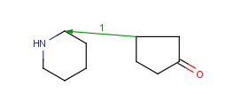 |
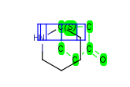 |
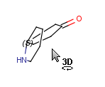 |
| 2 atom pairs |
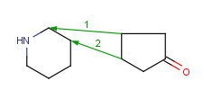 |
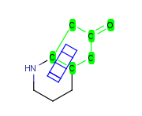 |
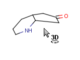 |
| 3 atom pairs |
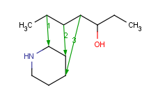 |
|
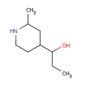 |
You can use coordinate bond to represent coordination compounds (ferrocenes, metallocenes).
For example:
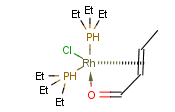
The coordinate bond type can represent the connection between an atom and a group of atoms.
The coordinate bond has two kinds of appearance according to IUPAC recommendation:
- arrow between two atoms,
- dashed line between an atom and a group of atoms.
In the Edit >Preferences >Bonds menu item you can change the default line type of coordinate bonds to solid.
To draw a bond between two atoms just choose the coordinate bond from
the bond list and draw the bond by specifying the required direction. To draw a
bond between an atom and a group of atoms you need to create
a multi-center attachment point to represent the group of atoms.
To draw a coordinate bond between an atom and a group of atoms
- Select the atoms to be represented at one end of the coordinate bond by a multi-center.
- Choose "Structure/Add/Multi-center" from the main menu or
"Add/Multi-center" from the contextual menu. A multi-center represented by a "*" will
be added. If you move the cursor to the multi-center the represented atoms are
highlighted (blue circle around the atom labels).
- Draw a coordinate bond from the multi-center and edit the other end of the bond if required.
The "*" representing the multi-center disappears after bond drawing.
- Repeat steps 2-4 to draw further multi-centers and coordinate bonds if required.
A Markush structure is a description of compound classes by generic notations.
They are often used for patent claims and for combinatorial libraries.
Link R-groups, link nodes, atom lists, position variation and
repeating units with repetition ranges are commonly used features in the representation of Markush structures.
Position variation (Variable point of attachment)
You can create a variable point of attachment to represent a variable connection point to a group of atoms.
The representation is similar to the above mentioned multi-center bonds.
For example:
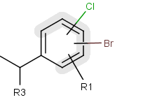
The alternative attachment points are displayed with grey shadow.
If you move the cursor to the center (the bond ending in the ring) the represented atoms are
highlighted (blue circle around the atom labels).
To draw a position variation
- Draw the structure that will include the position variation.
- Select the alternative connection point atoms.
- Choose "Structure/Add/Multi-center" from the main menu or
"Add/Multi-center" from the contextual menu. A multi-center represented by a "*" will
be added. If you move the cursor to the multi-center the represented atoms are
highlighted (blue circle around the atom labels).
- Draw a bond from the center and edit the bond if required. The represented atoms
are displayed with grey shadow after this step. The "*" representing the multi-center
disappears after bond drawing.
- Repeat step 2-4 to draw further variable points if required.
Frequency variation (repeating unit with repetition ranges)
A sequence of ranges to specify the repetition can also be used in a special
group called repeating unit with repetition ranges. For example:
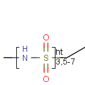
Here the repetition range is "3,5-7". The repetition count for the included structure
(enclosed by the brackets) can be: 3,5,6 or 7.
See Repeating units with repetition ranges
for further information on drawing this feature.
Homology groups in a Markush structure
The simplest way is to insert homology groups from the Periodic system's Advanced tab.
- Open the Periodic System (toolbar or from the View menu), choose the Advanced tab.
- In the Special nodes section, choose the homology group from the dropdown list.
- The homology group stays at the mouse pointer, you can click the atom(s) on the canvas.
You don't need to close the Periodic System to continue drawing.
Editing the homology group properties in MarvinSketch
Select the homology group and right-click. Choose Edit Properties... Set the group properties in the dialog box.
Here is an example of the property dialog window for a cycloalkyl group:
By default, the atom and homology group properties are not shown. You can switch it on by checking the
View > Misc > Atom Properties menu.
You might need to flip the whole or parts of the structures. These operations
are located in the Edit > Transformation menu. If no selection is made, the operation
will be executed on the whole structure (except for Group Flip). The flip operation is equal
to a rotation of 180° around a horizontal or vertical axis in the plane of
the drawing. All flips result in stereocenter retention.
| Horizontal flip (around y axis) |
 |
| Vertical flip (around x axis) |
 |
| Rotate 180° (in canvas plane, around z axis) |
 |
Horizontal Flip, Vertical Flip, Rotate 180°
Flip a selection:
- Select part of the structure.
- Right-click on the structure or go to Edit > Transformation menu.
- Click on the command.
Flip the whole structure without selection:
- Go to the Edit > Transformation menu.
- Click on the command.
Note: If no structure is selected, the right-click on the canvas will not offer the
flip command.
Group Flip
The Group Flip operation can be executed only on a selected structure connected
to the rest of the molecule by only one bond (of any type): the selection
can not be in the 'middle' of a molecule. The selection is not permitted for disjunctive structures either.
The Group Flip operation rotates the selected group by 180° around an axis
set on the bond connecting the selection to the rest of the molecule. Stereocenters
in the molecules are retained, the wedge bond styles change to keep the stereo information.
| Group flip |
 |
- Select part of the molecule.
- Right-click on the canvas and select Transformation > Group Flip; or go to
the Edit > Transformation menu.
- Select Flip > Group.
Apart from flipping Marvin is able to produce mirror images of the molecules or parts of.
These operations can be found in the Edit > Transformation menu. If no selection
is made, the operation will be executed on all the structures present in the canvas. Stereocenters will be
inversed. Mirroring horizontally means that the theoretical mirror is horizontal and
placed perpendicular to the canvas (left-to-right mirroring); the vertical
mirroring means the mirror is vertical and perpendicular to the canvas
(upside-down mirroring).
| Horizontal mirroring ( to xz plane) |
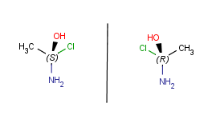 |
| Vertical mirroring (to yz plane) |
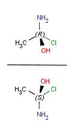 |
| Mirroring to canvas plane (to xy plane) |
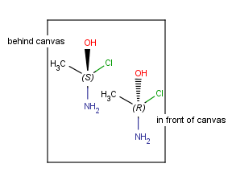 |
Mirror a selection:
- Select part the molecule.
- Right-click on the canvas or go to the Edit > Transformation menu.
- Click the command.
Mirror the whole structure without selection:
- Go to the Edit > Transformation menu.
- Click on the command.
Group Mirror
In case of only one connecting bond between the selected and unselected parts of
the structure, the Group mirror command is available. The group is mirrored to the plane perpendicular
to the plane defined by the two atoms of the above mentioned connecting bond plus a neighboring atom
(in the group) that is not collinear with the connecting bond.
This feature mirrors all compounds on the canvas or selected fragments in 3D to a selected inversion center.
The chirality is changed, all R is inversed to S, and vica versa.
The inversion center is the geometric center of the selected atoms: if there are more than one selected fragment, then
all fragments are inversed separately to their geometric center.
The inversion center is a selected atom: all fragments are mirrored to the selected atom.
You can place a reaction arrow on the canvas at any time, even on
a blank canvas. Only one reaction is allowed per molecule.
- Select the
Insert Reaction Arrow
button. You will see the reaction arrow on the tip of the cursor when
you move the mouse into the canvas area.
- Click the location of the tail of
the arrow.
- Drag the mouse and release at the location of the head.
Once you have placed a reaction arrow
on the canvas, MarvinSketch considers each part of the molecule in
relation to the reaction.
All parts of the molecule that are before the arrow are considered reactants.
Every molecule after the arrow is a product, and the ones placed along the
arrow are considered agents. You can align and/or distribute the objects of the reaction scheme by selecting the relevant option in Edit > Object menu. The centers of the objects will be considered during the alignment/distribution of objects. Note Selected agent fragments and texts are moved together with the arrow while keeping the distance between them.
The arrow tool provides the easiest manual way to map corresponding reactant
and product atoms. Select the arrow tool, hold down the left mouse button on a
reactant atom, and drag it to the corresponding product atom. The same map
number is added to both atoms marking, that they represent the same atom on the
two sides of the reaction scheme. Similar tool "Manual Atom Map" can be added by customization. There are also keyboard shortcuts for
mapping. Type m8, for example, and click on an atom. Atom map 8 is assigned to
that atom.
Marvin contains an automapper tool as well (available as
Structure > Mapping > Map Atoms) assigning map numbers to all selected atoms of
a reaction automatically.
Map numbers of the selected atoms can be removed by the
Structure > Mapping > Unmap Atoms menu item, or by typing m0 for the selected
atoms.
Electron flow arrow shows the actual direction of motion of the electrons. It can point from an atom or bond to an other atom or bond or even an incipient bond (formed after the electron transition).
- Select the arrow type (single electron flow or electron pair flow). (Menu: Insert > Electron Flow)
- Move the cursor onto a bond or an atom of the structure on the canvas, right-click on it. (It will be the source of the electron flow.)
- Select the destination: move the mouse to the destination and click on it.
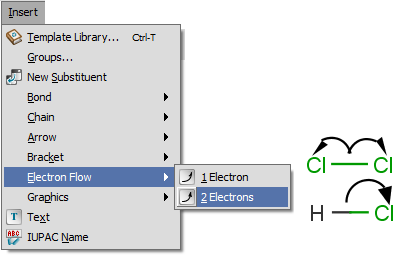
See detailes of handling and displaying endpoints here.
An R-group query describes a set of derivatives in one query structure (substitution
variation). It can be drawn the following way: First
draw the root structure and place some R atoms either from the Periodic System dialog window,
from the popup menu or by typing a corresponding label such as "R1" on the
keyboard.
Then draw the variable R-group ligands and select those substituting the R1 atom.
If you type "R1" now, the selected groups will be marked with "R1". Additional
R-group conditions (Occurrence, RestH, If-then) can be set in the R-logic dialog
window available from the Structure > Attributes menu.
To draw the attachment points for the R-definitions, you can use menu
"Atom > R-group Attachment" from the menu (or R-group Attachment from the
popup menu), or alternatively,
when you draw the R-definitions and the mouse cursor still shows "R1",
clicking on an atom of the definition will toggle the attachment point on that
atom. (Please note that divalent R-groups must have two attachment points
defined.)
Step by step example
- Draw the root structure first.
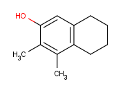
- Move the cursor to the atom where you would like to place the R-group.
(In this example, we place R-groups in place of the terminal carbon atoms.)
When the atom is highlighted (blue circle around the atom label), type the
shortcut of the required R-group ID (e.g. R1). Alternative solution is
selecting the ID from R-group sub-menu of the popup menu by pressing right
mouse button over the atom.
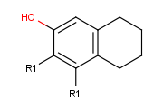
- Draw an alternative ligand with an R-group connection: Move the cursor to an empty place on the canvas (take care that nothing is selected) then press
the shortcut of the next R-group (R2). The "in hand" object changes to the ID of the R-group (R2). (In this example, we add a ligand to terminal oxygen atom.)
Click the terminal oxygen, then drag the mouse. You will
see that the new bond is displayed and its orientation follows the cursor.
Release the mouse button when the bond stands in the right direction.

- Draw new fragments to the canvas (separately from the root structure), which
will be the R-group definitions. (In this example, we draw the fragments for
the first R-group definition to the right side and the second R-group
definition will be placed below the root structure.)
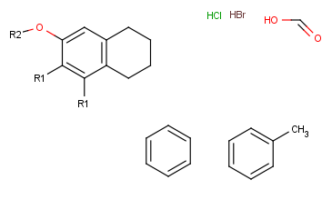
- Next, define the R-group definitions. To do this, select those fragments
that the first R-group should contain (on the right side).
After the selection, press the shortcut of the R-group ID (R1). The ID and equal sign (R1=) will display beside the selected set and the "in hand" object
will be the R-group ID.
- Define attachment point to R-group members: Click the left mouse button on
atoms where you would like place the attachment points.
Repeat this operation on the other definitions of the R-group.
(In this example, at the third definition, we select the left oxygen atom
for attachment.) Alternatively, you can define R-group attachment points
via the popup menu (by selecting R-group Attachment option on an atom of an R-group definition).
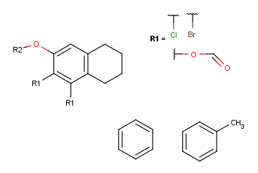
- Create the second R-group by repeating the last two steps on the two
remaining fragments.
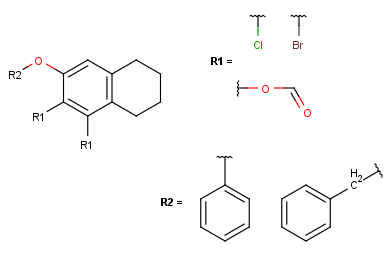
-
In case of one attachment point, the connections are not numbered, only marked by a wavy line on the substituent side.
In case of more than 1 attachment point, the connections are marked by numbers
on the scaffold. Connection points on the substituents are marked with a wavy line, and
the order is indicated by numbers (except for the 1st).
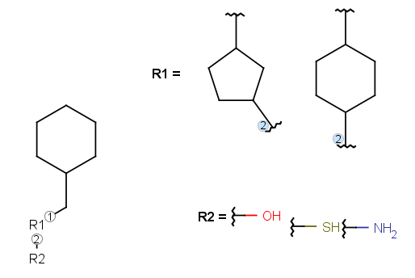
If two R-groups are connected by a bond, the ligand order may be changed simply by the Bond > Ligand order command. Simply select the bond in question and select the combination in the menu (also available upon mouseover in the context menu).
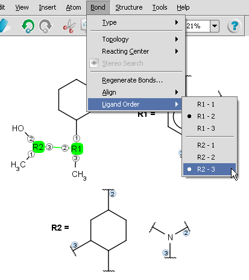
- You can define additional conditions, such as occurrence, rest H and if-then
expressions to R-groups in the R-logic dialog window. To do this,
select menu option Structure > Attributes > R-logic.
After setting the conditions in the R-logic dialog window, press the
OK button to apply the changes. R-logic can be visualized
by switching on the Display > Misc > R-logic option.
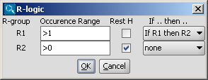
You can create a group easily from a structure. There are two possibilities:
- Select the molecule or part of the molecule. Click the Create Group button in the
toolbar and edit the group properties in the dialog window.
- Click the Create Group button in the toolbar then select parts of the
group. Upon releasing the mouse button, the Group dialog pops up.
Command shortcut: Ctrl-G
Edit groups: (since version 5.3) right-click on the group, select Edit group
from the contextual menu and the group dialog opens.
Alternatively, select
the group atoms and select Edit Group from the structure menu, Group submenu.
Group types: In the dropdown list of the group type only those types are allowed which are enabled for the
actual selection in the molecule (to enable all types: go to Edit > Preferences > Structure tab
and uncheck the 'Validate S-groups at creation' box.)
Enabling/disabling a group type depends on:
- The number of crossing bonds it would have.
- The embedding of groups into each other: several conditions are checked here for the group to be created
- whether it can be embedded into the groups which would contain it,
e.g. polymer S-groups can not be embedded into multiple S-groups
- whether it can embed all the groups which would be contained by it,
e.g. structural repeating unit S-groups (SRU) can not embed monomers
- whether it can be embedded directly into the group which would be its direct embedder,
e.g. component S-groups can be directly embedded only into ordered or unordered mixtures
- whether it can directly embed the groups which would be embedded by it directly,
e.g. mixtures can directly embed only components.
- Expandable S-groups are not allowed to be embedded into each other.
Since those group types which are allowed only for whole fragments (mixtures, components and monomers) are always extended to whole fragments, thus these types are allowed even if only fragment parts where selected, if they are correct when extended to the whole fragment.
Extension to whole fragment is not allowed if the group type is changed by editing an existing group: in this case mixtures (etc.) are not allowed for fragment parts.
Abbreviated groups are used to represent a part of a structure with a text abbreviation.
- Insert an abbreviated group into your sketch: type the name of the abbreviation, to complete a longer name,
press ENTER or END after typing the first few characters. If the cursor was placed
over an atom, it will be automatically changed to the abbreviated group. If no atom was selected,
the abbreviation is placed on the cursor. Click on the canvas to place it. If you would
like to ungroup an S-group before placing it to the canvas,
press the SHIFT button before you release the mouse on the desired
location.
- Create an abbreviated group: Click the Create Group button in the toolbar then select parts of the group. Upon releasing the mouse button, the Group dialog window pops up (this dialog window may be opened from the Structure > Group submenu as well). Name the group in the dialog window.
You can retrieve the hidden structure from the text abbreviation with the "Expand"
function and hide the structure with the "Contract" function.
Manipulation with abbreviated groups is possible with "Expand", "Contract",
"Ungroup", and "Remove" from the Group submenu.
A short animation about abbreviated groups:
Expand and ungroup abbreviated groups.
After creating the abbreviated group (see previous section), right-click the corresponding
atom and click to add the attachment point marked by an asterisk. This way you
define the connection point of this
group. Then select the group, right-click and press Add to My Templates. The template
can be inserted by typing its name and clicking on the canvas.
Syntax of the abbreviated group name
Numbers are automatically subscripted unless "\n" is used or at the start of string.
Charges (+, -, ++, --, 3+ etc.) are automatically superscripted at end of string
or if the following character is a closing parenthesis.
Allowed control sequences in the abbreviated group name:
- \s - subscript
- \S - superscript
- \n - normal mode.
Example: \S13CH4
Besides the default abbreviated groups you can also set up your own user-defined groups or redefine the default ones.
Marvin stores its default groups in a formatted .txt file named default.abbrevgroup and by adding your own group file you can complement the default.
To assemble your own .abbrevgroup file you should strictly follow abbreviated groups file format.
The newly defined file must be named user.abbrevgroup and should be put in the %USER_HOME%/chemaxon (on Windows) or $USER_HOME/.chemaxon (on Linux, UNIX or OSX) directory in your file system.
Note that Marvin gives priority to the user-defined abbrevgroups and overrides the default after redefinition.
Multiple groups are used to represent a repeating part in a structure with a shorter
form. To create a multiple group, click the Group tool on the toolbar, then select the structure involved.
Here you can specify a positive repeating count depending on how many times you want the structure to be repeated.
You can retrieve the whole structure from the condensed form with the "Expand"
function and shorten the structure with the "Contract" function.
Manipulation with multiple groups is possible with "Expand", "Contract",
"Ungroup", "Edit Group", and "Remove" from the Group submenu.
These features can be expressed by brackets (groups) of type component,
unordered mixture (also called mixture) and ordered mixture (also called formulation).
A component here is a set of atoms contained by a component bracket.
Ordered and unordered mixtures
An unordered mixture (denoted by "mix" at the bottom of the right bracket)
consists of several unordered components (denoted by "c" at the bottom of the right bracket).
For these types of mixtures, the order of addition during the
preparation is not important. Example:

Ordered mixtures, on the other hand contain ordered
components, which define the order of addition. Example:

To draw an unordered component
- Draw the structures that form the mixture.
- To define a structure as a component in a mixture, click the Group tool on the toolbar, then select the structure.
- In the "Create Group" dialog window choose "Component (c)" from the "Type" list.
- The "Order" field should be empty or should contain "none".
If the "Order" field already contains a number, just
delete it (you can type in "none" as well).
- Click OK.
To draw an ordered component
- Draw the structures that form the mixture.
- To define a structure as a component in a mixture, click the Group tool on the toolbar, then select the structure.
- In the "Create Group" dialog window choose "Component (c)" from the "Type" list.
- If this is the first component of the mixture,
click the "Order" field and enter "1" in place of "none".
If the "Order" field already contains a number Marvin will automatically increment the
"Order" field for subsequent components.
- Click OK.
To draw a mixture
- Create the components to form the mixture.
- Click the Group tool on the toolbar, then select the structures.
- In the "Create Group" dialog window choose the type
("Ordered mixture(f)" or "Unordered mixture(for)") from the "Type" combobox.
- Click OK.
To change the type of a mixture
- Hover the mouse over the group.
- Choose "Edit Group" from the contextual menu
(right mouse click on the selected mixture).
- Change the type of the mixture.
- Click OK.
To add a new component to a mixture
- Draw the new component.
- Drag one part of the bracket and move it to enclose the new component.
To delete a component from a mixture
- Select the component.
- Press the Delete button on your keyboard or select the Erase tool.
The polymer structure consists of structural fragments. These fragments are enclosed by polymer
brackets. The meaning of a polymer bracket is that the fragment within the brackets can
repeat with itself. The fragment within the bracket is called repeating unit.
Polymers can be represented as structure-based or source-based polymers depending on how
much structural detail is known.
You can use the monomer (mon) or mer (mer) repeating unit types to draw a polymer where only the
source-based representation is known. For example:
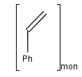
To draw a repeating unit, click the Group tool on the tooolbar, then select the atoms you want to be included.
You can use the structural repeating unit type (SRU) to draw a polymer where the structure-based
representation is known.
Each SRU S-group has two or more dedicated bonds, called
crossing bonds, which cross the brackets. The crossing bonds of an SRU show
how the repeating units may connect in several ways to each other within the polymer.
Depending on the number of crossing
bonds and brackets we differentiate the following polymers and connectivities within the polymer:
- Polymers with two crossing bonds.
If the polymer has one crossing bond on each bracket of the SRU
there are three possibilities for the repeating pattern:
- head-to-tail
- head-to-head
- either/unknown

- Ladder-Type Polymers.
Polymers with paired brackets and with two crossing bonds on each bracket are
called ladder-type polymers. Here it must be specified how the two crossing bonds
on each bracket connect to the corresponding bonds of the adjoining repeating units.
Additionally to the head-to-tail, head-to-head connectivity information
there is flip information to specify whether the repeating unit flips around the polymer
backbone when it connects to the adjoining SRU.
These types of information are handled only in case of brackets
with exactly two crossing bonds on both side (head and tail side).
We differentiate the following polymer connectivities:
- head-to-tail with no flip
- head-to-tail with flip
- head-to-head with no flip
- head-to-head with flip
- either/unknown
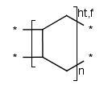
- Polymers with three or more brackets.
If the polymer has three or more bonds with a separated bracket on each bond,
the polymer always has the either/unknown repeating pattern.
The end groups of polymers are often unknown or unspecified which are represented by star atoms (*).
The modified (mod), grafted (grf) and crosslinked (xl) form of a structural repeating unit can be drawn as well.
If the structure consists of more than one repeating unit (mon, mer) or structural repeating unit,
Copolymer (co) brackets/groups can be used to represent the structure. Copolymers might contain crossing bonds and
star atoms.
The following copolymers can be drawn:
- random(ran)
- alternating(alt)
- block with or without junction unit (blk)
- copolymer to represent modified polymers (mod)
- copolymer to represent grafted polymers (grf)
- copolymer to represent cross-linked polymers (xl)
For example:

To draw a simple polymer
- Draw the structure that forms the polymer.
- Click the Group tool on the toolbar, and select the structure. Leave out the atoms that should be replaced by "*" (star atoms).
- In the "Create Group" dialog window choose the appropriate type from the "Type" list.
- Set the polymer repeat pattern if necessary.
- Click OK. The star atoms ("*") will be added automatically.
To draw a ladder-type polymer
- Draw the structure that forms the polymer.
- Click the Group tool on the toolbar, and select the structure. Leave out the atoms that should be replaced by "*" (star atoms).
- In the "Create Group" dialog window choose the "SRU polymer" type from the "Type" list.
- Set the polymer repeat pattern if necessary.
- Click OK. The star atoms ("*") will be added automatically.
- To create a bracket that crosses two bonds select the two brackets
each crossing a bond and click Merge Brackets in the contextual menu.
To draw a copolymer
- Create the components to form the copolymer.
- Click the Group tool on the toolbar then select the components to be included.
- In the "Create Group" dialog window choose the type
("Copolymer (co)", "Copolymer, alternating (alt)", "Copolymer, block (blk)" or "Copolymer, statistical (stat)") from the "Type" list.
- Click OK.
To change the type of a polymer
- Hover the mouse over the group.
- Choose "Edit Group" from the contextual menu
(right mouse click on the selected mixture).
- Change the type of the polymer.
- Click OK.
To add a new subpolymer to a copolymer
- Draw the subpolymer to add outside of the bracket.
- Drag one part of the bracket to include the new subpolymer. The new molecule should be marked with blue circles when you hover the mouse cursor over it.
To delete a subgroup from a copolymer
- Select the subpolymer to delete.
- Press the Delete button on your keyboard or with the Erase tool.
A sequence of ranges to specify the repetition can also be used in a special group called repeating unit with repetition ranges. For example:
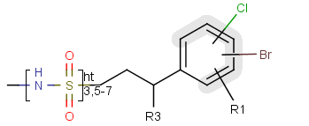
Here the repetition range is "3,5-7". The repetition count for the included structure can be: 3,5,6 or 7.
Syntax of the repetition ranges
The repetition ranges consist of ranges separated by commas. A range can be either a simple non-negative number (e.g. 3)
or two non-negative numbers separated by "-" (e.g. 5-7).
To draw a repeating unit with repetition ranges
- Draw the structure that forms or contains the repeating unit.
- Click the Group tool on the toolbar, and select the structure.
- In the "Create Group" dialog window choose the type "Repeating unit with repetition ranges" from the "Type" list.
- Set the repetition ranges.
- Click OK.
Four types of groups can be assigned a charge sign: generic, component, monomer and mer groups.
During group creation, you have the option to display the charge on the charged
atom itself or the whole group. In the latter case, the charge will be displayed
outside of the bracket on the right. If any additional charges are added (negative
or positive) the net charge will be calculated and displayed. The charge-bearing
atom can be revealed by pointing the cursor over the group (in select mode). To
replace the charge, select the group and go to the Structure menu, Group submenu and click
Edit Group (or right-click the selected group, and select Edit Group).
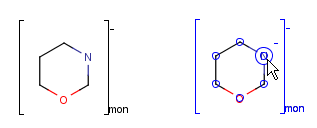
To draw a (poly)line, rectangle or text box, use the
Insert menu or the toolbar (if visible). These objects
are depicted in blue color outlines to indicate that any object here does not
bear any chemical meaning like reaction arrows or S-group brackets (in black).
Point the mouse to the
desired position on the canvas, click and hold the left button, move the mouse
and release the button. To create a small rectangle or text box click again.
The shape of an object is changeable or resizable by dragging one of its points to do it.
After placing a text box,
you can immediately use the keyboard to type a text. Symbols can be inserted directly through the Insert symbol tool,  . The tool contains the list of the most commonly used symbols by default. This list will be updated according to your latest selections. Click on the relevant symbol and it will appear in the textbox. If the desired symbol is not on the list, click on More Symbols for the full character list.
. The tool contains the list of the most commonly used symbols by default. This list will be updated according to your latest selections. Click on the relevant symbol and it will appear in the textbox. If the desired symbol is not on the list, click on More Symbols for the full character list.

To change the contents of a text box, choose
Select mode, click on the box, then use the
keyboard.
To insert the IUPAC Name text box choose it from the Insert
menu, it will be automatically inserted under the structure. The name will be updated
real-time.
You can draw link atoms using the popup menu in two ways:
- Right-click on the atom to bring up the popup menu. Select the required
repetition number from the "Link node" submenu. Marvin will find out the
outer (non-repeating) bonds for you.
- Select the atom you would like to be the link node and two neighboring
bonds for outer (non-repeating) bonds. Right-click anywhere on the canvas
to bring up the popup menu. Select the required repetition number from the
"Link node" submenu.
Marvin will advise you if it is not possible to create a link node for the
specified configuration (for example at ring fusions).
Outer (non-repeating) bonds will be denoted by brackets crossing them, and
the repetition numbers will be put on the atom. All portion of the molecule
connected to the link atom through non-outer bonds are supposed to repeat
together with the atom. See examples below.
| Molecule with link node |
Meaning |
| 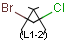 |
 |
| 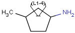 |
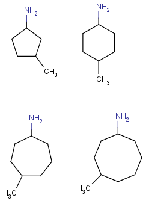 |
| 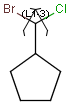 |
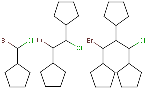 |
To edit a link node repetition number or change outer bonds, repeat the
drawing steps above. To make a link atom ordinary atom again, select "Off" from
the "Link node" submenu.
- Set Selection mode on by clicking one of the three available
Selection buttons.
- To select a single atom, click
on it.
- To select two joined atoms,
click on the bond that links them.
- To select a rectangular region, choose Rectangle Selection,
click at one corner of the desired region and drag the mouse
to the opposite corner. While the mouse button is pressed
down, a guide will be displayed to aid you.
- To select a non-rectangular
region, choose Lasso Selection, press the left mouse button to start selecting,
and draw the region with your mouse without releasing the mouse button.
A blue guide line appears along the selection region. A pink line
will connect the start and end points.
- To select a fragment
- double-click on an atom or bond using Rectangle or Lasso selection,
- or use the Structure Selection button and single-click on an atom or bond.
You can unselect all by clicking an empty area of the canvas.
Using the Erase
button:
Set Erase mode on by clicking the
Erase button.
To erase a single atom or bond,
click on it. The deletion of the terminal bond deletes the terminal atom by default.
Pressing the Alt button while deleting the bond, the terminal atom is not deleted. To
change the default behaviour, go to Edit > Preferences > Bonds tab and choose the desired
Terminal Bond Deletion Method.
To erase a rectangular region,
click at one corner of the desired region and drag the mouse
to the opposite corner. While the mouse button is pressed down,
a guide will be displayed to aid you.
To select a non-rectangular
region, use the lasso selection function first, then press the Erase button.
Using Selection mode:
Select a portion of the structure.
Click the Cut button or use the DELETE
button on your keyboard.
Using pop-up menus:
Right click on an atom or bond.
Select Remove from the pop-up menu.
You can edit a molecule using the methods described in
How to Draw Structures and
How to Delete a Structure.
You can alter a molecule by directly editing its source in the
Edit Source Window. You can view and edit the source in any of the
supported file formats. To change format, simply select the desired
one from the View
Menu. If there are multiple molecules on the canvas, checking View as multiple molecules in the
View Menu leads to each molecule appearing in a separate block in the source.
This feature works only, if the selected format is able to handle multiple fragments.
To reload the molecule described by the text in this window
into the MarvinSketch canvas (including any changes you may have
made), select File >
Import As. If the automatic format
recognition detects a file format (checking it by a priority list), it will be
offered in the Select Import Mode field (Import as Recognized, indicating the file type in brackets).
If the structure is associated to a file type of higher priority than your choice,
choose the Import As option to set the file format.
For example, you want to create the seryl-asparagine dipeptide: write "SN" in the Source,
then select Import. The automatic option detects
it as SMILES, but if you select the Import As option, and then the
"Peptide Sequence" from the list, it will be imported correctly.
In addition, there are some cases when the automatic recognition cannot detect
the file format, even though the entered text is correct (although it is very
rare). In this case the Import As Recognized option is disabled and you
have to choose the format from the list of the Import As option.
Marvin allows you to clean your molecule in either 2D or 3D. Cleaning
will calculate new coordinates for the atoms. Generating conformers and
choosing the favored one is also supported.
You can initiate cleaning via the Structure
> Clean2D/3D submenu. For more information on molecule cleaning, please visit
this link.
Submenus
- Clean 2D
- Clean in 2D: cleans the molecule(s) in 2D
- Hydrogenize Chiral Cneter: adds an explicit hydrogen with a wedge bond to
chiral centers which have no terminal atoms as substituents
- Clean Wedge Bonds: changes wedge bonds for convention display
- Clean 3D
- Clean in 3D: cleans the molecule(s) in 3D
- Cleaning Method: choosing from various methods
- Display Stored Conformers: works only if conformers of the sketched molecule had
been generated with the help of the Conformer plugin, choosing the
'Store conformer information in property field' option. See details in the
plugin's documentation.
You can toggle the display of rings as aromatic using the
Structure > Aromatization submenu.
There is a wide range of functions related to the display of the
molecules. These settings can be found in the
View menu and
the Preferences dialog window.
Additionally, you can move, rotate, and zoom in/out on the structure.
You can move or rotate a selected structure.
First, select the part of the structure
you wish to move.
Moving the selection:
Move the mouse pointer toward
the center of the selected structure until a blue
rectangle appears.
(You can also use the Space key to change between transformation modes.)
Translate the selection by
dragging the mouse.
Rotating the selection:
Move the mouse pointer toward
the outline of the molecule until a blue gear appears.
(You can also use the Space key to change between transformation modes.)
Rotate the selection by dragging the mouse.
Rotating the selection in 3D:
Rotation in 3D of the following structural parts is possible:
- all compounds on the canvas,
- selected fragments,
- selected groups.
The axis of the 3D rotation can be selected from the Edit->Transformation->Rotate in 3D
menu or contextual menu from the following list:
- Around an arbitrary axis defined by two atoms: in this case you are asked to select the atoms prior to the rotation.
- Around x axis: horizontal axis in the plane of the canvas
- Around y axis: vertical axis in the plane of the canvas
- Around z axis: axis perpendicular to the plane of the canvas
- Free 3D rotation: the rotation follows the movement of the mouse (click&drag).
(Note: 3D rotation mode until version 5.3.x: pressing the Space key 3 times initiates the free 3D rotation.)
- Group Rotate: available only for a selected group in a molecule. The connecting bond(s) is recognized between the
selected and unselected parts of the structure and selects the rotation axis accordingly.
The rotations are visualized by the fog effect: parts of the molecule behind the canvas are of
lighter colour than the parts on the canvas. To see best the 3D view, use white background (View > Colors > White Background).
Customized tool: 3D plane:
Select 3 atoms in the molecule.
Click the 3D Plane button or select Edit > Transformation > 3D Plane.
The selected 3 atoms will lie in the plane of the canvas.
The coordinates are changed, not only the view of the structure.
- Note: currently 3D coordinates of brackets (e.g. monomer, component type groups)
are not correctly updated when rotating the molecule in 3D mode. Avoid when possible.
Set the magnification of the molecule being on the canvas by the
Zoom buttons. If you have a mouse with a wheel, hold down the Ctrl key, and then scroll the wheel to zoom in or out.
When a molecule is loaded into the sketcher it is scaled
automatically to fit the window.
You can set the display format for the molecule and screen
resolution using the View
> Display submenu. Available molecule formats are
Wireframe, Wireframe
with Knobs, Sticks, Ball and Stick, and Spacefill.
You can set the resolution to low or high via the Quality
submenu.
The View >Colors
submenu allows you to specify the color
scheme of the molecules. The available options are:
Marvin has a number of options for the display of implicit and
explicit hydrogens. Because Marvin is chemically intelligent, it will
automatically add hydrogens as necessary within the structure.
Generally, these will be implicit and displayed based on the options
set in the View
menu.
To view all hydrogens explicitly, displayed as atoms with bonds to
neighbors, chose Structure
> Add > Add Explicit Hydrogens. The Structure
> Remove > Remove Explicit Hydrogens will return to the previous display mode.
To view implicit hydrogens by symbol, use the View
> Misc > Implicit Hydrogens menu group. This option
is disabled in Spacefill and Ball & Stick display modes.
Displaying the label of carbon atoms in structures is possible the following way:
- Always - Always show the atom labels of carbon atoms.
- Never - Never show the atom labels of carbon atoms.
- At straight angles and at impl. Hs - Show the atom labels of carbon atoms at straight angles and at implicit Hydrogens.
This option can be set in the Display tab of the Edit
> Preferences box.
Marvin can not automatically correct all valence errors or any reaction errors. Instead,
these errors are highlighted and you may make the
appropriate corrections yourself.
This option can be enabled and disabled through the Edit
> Preferences box.
Many of the display settings in Marvin are saved and reloaded the next time you start the program.
Background color, molecule color scheme, and hydrogen visibility can be set
from the View menu and will be saved automatically when you exit the program.
Other options, including look & feel, error highlighting, and object visibility
can be set using the Preferences dialog window from
the Edit menu.
2D and 3D Viewer Windows
Choosing View >Open 2D Viewer or
Open 3D Viewer
launches a MarvinView window containing the current molecule of MarvinSketch.
More advanced display format can be obtained for the molecule by applying format styles.
Format styles in Marvin include the setting of the following attributes:
- type of atom font,
- size of atom font,
- color of atoms,
- thickness of bonds,
- color of bonds.
All these options can be collectively set using styles.
To load or define styles use the Edit > Format... menu.
This menu brings up the "Format of
the current document" dialog in which atom and bond format options can be specified.
The original attributes for
atoms and bonds can be restored by using the Reset
functions of the dialog at any time.
When loading a molecule all atoms/bonds belong to the default atom/bond set
if no styles were applied previously.
After selecting an atom/bond set and applying a style for it, the selected atoms/bonds are
removed from the default atom/bond set and a new set is created from the atoms/bonds with new style.
All the atoms/bonds, whose style were not yet modified by selection and applying a style on them,
still belong to the default atom/bond set.
Your changes might be applied for a set of atoms/bonds:
- for the selected atom/bond set,
- for the default atom/bond set,
- for all the atoms/bonds.
The top three radio buttons specify the target of the format settings being edited
in the dialog.
The "Apply changes for all the atoms/bonds" option allows loading of predefined styles
or creation of custom styles using the Load Style and Save Style buttons.
Loading a style
After pressing the Load Style button, you can load a style from a combo box or browse amongst the previously defined
style files. The chosen style will be loaded into the "Structure Drawing Properties" in the "Format of the current document" dialog.
Saving a style
Set the "Structure Drawing Properties" you wish to save and press the
Save Style button to get to the "Save" dialog where you can enter the name of the style file and save the style.
All your own saved files will be stored under the <HOMEDIR>/chemaxon/styles/ directory (where <HOMEDIR> is the user's home
directory) and will be added to the combobox items.
A new style file can be added to the chemaxon/marvin/styles directory under the Marvin installation directory.
This new style file has to be listed in file chemaxon/marvin/styles/styleFileList.properties. The new style file
will be copied to the <HOMEDIR>/chemaxon/styles/ directory and appear in the combobox of the "Loading of a journal style" dialog.
(No existing style files under <HOMEDIR>/chemaxon/styles/ are overwritten)
Return to Top
Copyright © 1998-2012
ChemAxon Ltd.
http://www.chemaxon.com/marvin